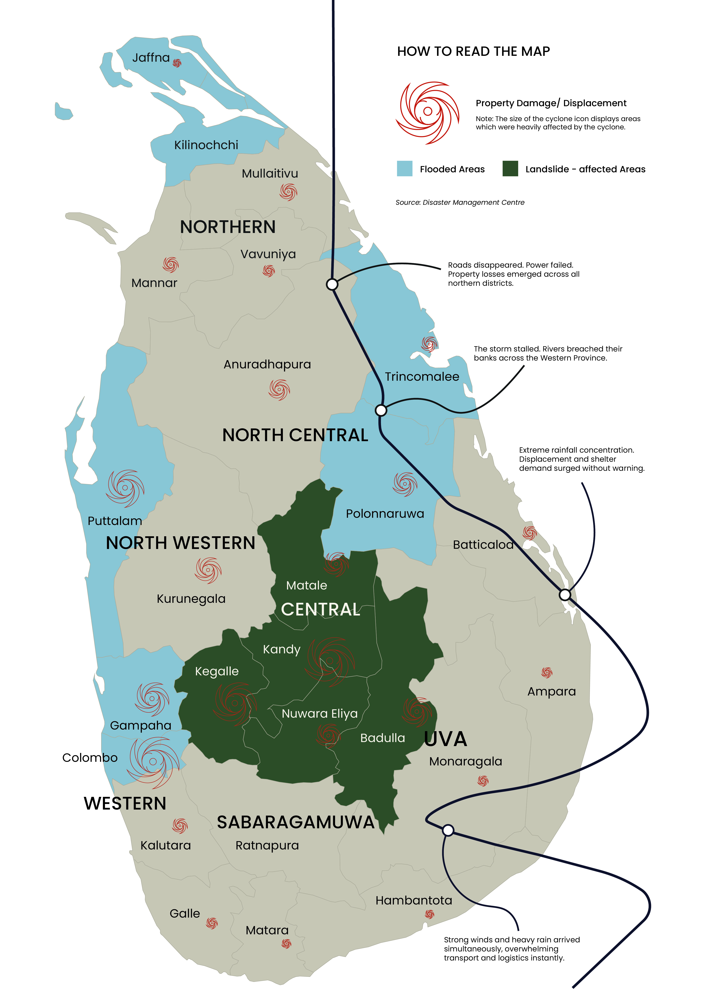

Waves buried the coast. Roads and bridges went under within an hour.
Relentless rain broke the highlands apart. Mountain towns were completely sealed off.
The storm pushed north and erased entire crop fields — days before harvest.
